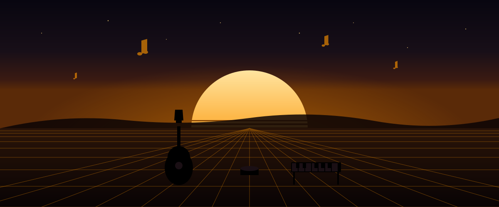

Dzieci
8 min
Instrumenty muzyczne dla dzieci
Praktyczny przewodnik po wyborze pierwszego instrumentu dla dziecka. Wiek, rozmiar, budżet i najczęstsze błędy rodziców — wszystko oparte na doświadczeniu z realnej sprzedaży.
Czytaj poradnik →